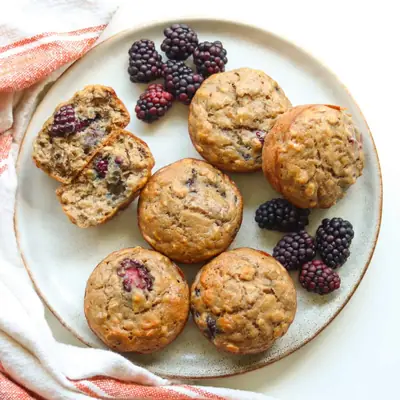

Banana Blackberry Muffins

Ingredients
- 1 1/2 cups mashed banana (300g), about 3 medium
- 2 eggs
- 1/4 cup maple syrup
- 3 tablespoons unsalted butter (or olive oil or coconut oil)
- 1 teaspoon vanilla extract
- 1 cup AP flour or white whole wheat flour (150g)
- 1/2 cup rolled oats (50g)
- 1 teaspoon baking powder
- 1/2 teaspoon baking soda
- 1 teaspoon cinnamon
- 1/4 teaspoon salt
- 1 cup blackberries, slice in half (toss in 1 tablespoon flour, shake off excess)
Steps
- Preheat the oven to 350°F (175°C). Line a 12-cup muffin pan with paper liners or lightly grease.
- Mix the wet ingredients.In a large bowl, whisk together the mashed banana, eggs, maple syrup, melted butter, and vanilla extract until smooth and well combined.
- Mix the dry ingredients.In a separate bowl, whisk together the flour, oats, baking powder, baking soda, cinnamon, and salt.
- Combine wet and dry.Add the dry ingredients to the wet ingredients. Stir gently until just combined. Be careful not to overmix.
- Fold in the blackberries.Gently fold the floured blackberries into the batter until evenly distributed.
- Bake.Divide the batter evenly among the prepared muffin cups, filling each about ¾ full. Bake for 20–25 minutes, or until a toothpick inserted into the center comes out clean.
- Cool.Let the muffins cool in the pan for 5 minutes before transferring them to a wire rack to cool completely.
Recipe by Min Kwon · Kidfriendly Meals, from MJ and Hungryman. Saved here for personal use; the original has the full notes, tips and photos. Open original